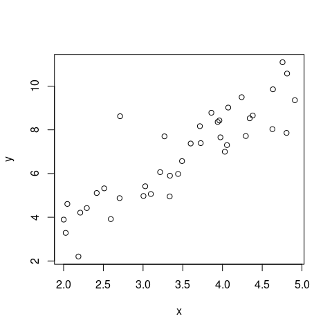
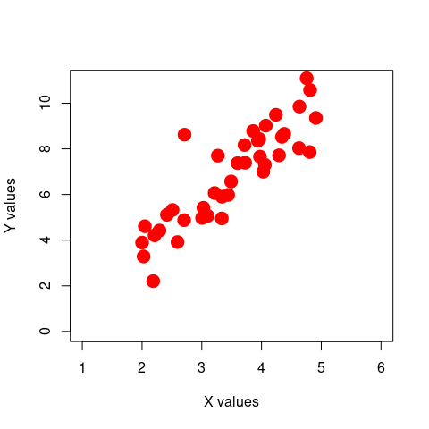
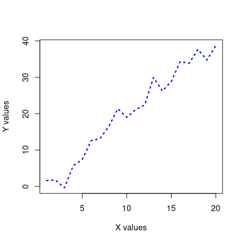
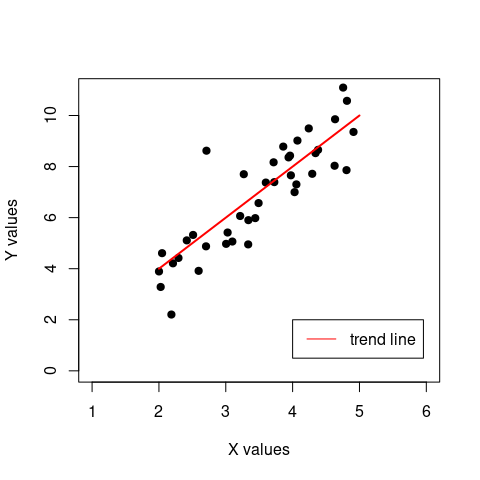
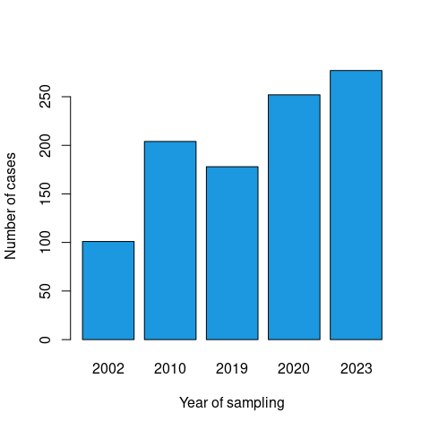
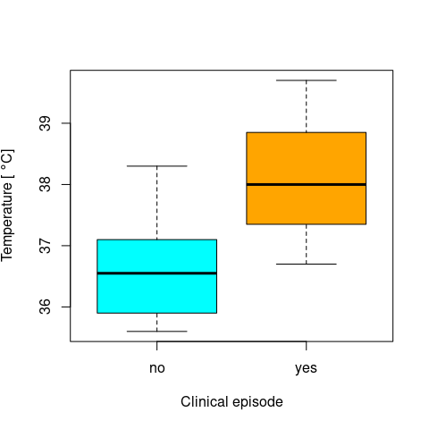

1 General introduction to R/RStudio
R is an object-orientated programming language. This means that you create objects, and give them names. You can then do things to those objects: you can perform calculations, statistical tests, make tables or draw plots. Objects can be single numbers, characters, vectors of numbers, matrices, multi-dimensional arrays, lists containing different objects and so on.
Whilst R provides its own development environment, we will use a fantastic IDE (integrated desktop environment) provided by RStudio. This is free to download, provides some neat features, and crucially, looks the same on all operating systems!
The helpful folks at RStudio also produce a series of excellent Cheat Sheets. Please note, these are updated semi-regularly as new packages are added or existing packages updated. Note also that these cheat sheets focus on the use of RStudio, and a small number of subset of packages that are developed by RStudio (e.g. tidyverse, shiny and rmarkdown). For example, a nice Cheat Sheet for RStudio itself can be found here.
\(~\)
1.1 Setting up an R session
It is worthwhile getting into a workflow when using R. General guidelines I would suggest are:
- Use a different folder for each new project / assignment. This helps to keep all data / script / output files in one self-contained place.
- Set the Working Directory for R at the outset of each session to be the folder you’ve specified for the particular assignment you’re working on. This can be done in RStudio by going to Session > Set Working Directory > Choose Directory. This sets the default search path to this folder.
- Always use script files to keep a record of your work, so that it can be reproduced at a later date. Put simply, R scripts are just text files that contain commands to run in R.
1.2 R packages
R has hundreds of add-on packages that provide functionality for a wide range of techniques. We will be using a number of packages that are not automatically installed when you first installed R, and a key part of becoming proficient with R is learning how to install and load packages.
To install an the tidyverse R package, for example, simply run
install.packages('tidyverse')If it installs without any errors, you can load the library using
library(tidyverse) Note: sometimes packages / libraries have dependencies, meaning that the require other libraries to be installed first before a package can be installed. This is usually communicated via error messages during the installation process.
\(~\)
1.3 Variables, vectors and data frames in R
R makes use of symbolic variables, i.e. words or letters that can be used to represent or store other values or objects. We will use the assignment operator <- to ‘assign’ a value (or object) to a given word (or letter). Run the following commands to see how this works (don’t worry about the comments, these are for your understanding):
## assign to x the value 5
x <- 5
## print the value assigned to the
## variable x to the screen
x ## [1] 5## we can also assign text to a variable
y <- "Hello There"
## print y
y## [1] "Hello There"## we can re-assign variables
y <- sqrt(10)
## or assign a variable in terms
## of other variables
ziggy <- x + y
## print variable "ziggy"
ziggy## [1] 8.162278You will notice that as we create each of these variables, they begin to appear in the environment pane in the top right-hand side of the RStudio window. This shows the current R workspace, which is a collection of objects that R stores in memory. We can remove objects from the workspace using the rm() function e.g.
## remove the variables x and y
rm(x, y)Notice that x and y have now disappeared from the workspace. The variable ziggy still contains the correct answer though (these are not relative objects, such as the macros assigned in a program like Excel).
ziggy## [1] 8.162278Objects in R are not restricted to single values. Objects containing multiple values are commonly referred to as vectors, which are generally defined using the c() notation, e.g.
# create a vector with 4 numbers
x <- c(2, 1, 3, 5)
x## [1] 2 1 3 5# or a vector containing 4 strings
names <- c("Neil", "Ella", "John", "Grace")
names## [1] "Neil" "Ella" "John" "Grace"One of the most important aspects about vectors is that we can directly access individual elements, or certain slices of a vector
# get the second element of x
x[2]## [1] 1# get the first 3 elements of names
names[1:3]## [1] "Neil" "Ella" "John"# get last two elements of x
tail(x,2)## [1] 3 5Note: vectors are not restricted to contain single data types, i.e. you can mix numbers with characters, strings, booleans etc.
Being able to work with (vector or matrix) indices is crucial for effective data handling - please make sure that the notations are fully understood. The following exercises will help you practice:
1. create a vector with 7 numbers and assign it to an object `myvec`
2. add the 1st and 2nd elements of `myvec`
3. multiply the 1st, 3rd and 5th element of `myvec`
4. assing the first four elents of `myvec` to a new vector call `myvec_new`
5. (advanced) using the above defined vectors `x` and `names`, assign a name with the corresponding age (matched by index, i.e. 1. name to the 1. number), such that a message "Neil is 2 years old" is printed out. </div></div>\(~\)
1.3.1 Data frames
A data frame in R is a particular structure for storing datasets. You can think of them as lists of vectors or, more intuitively, similar to a spreadsheet in Excel. Although all vectors need to be of equal length, they can contain different types of data. Here is an example of a data frame
df <- data.frame(ParticipantID = c('ID001', 'ID002', 'ID003', 'ID007', 'ID009'),
Age = c(12, 8, 9, 7, 11),
Episode = c('y', 'n', 'n', 'y', 'y'))| ParticipantID | Age | Episode |
|---|---|---|
| ID001 | 12 | y |
| ID002 | 8 | n |
| ID003 | 9 | n |
| ID007 | 7 | y |
| ID009 | 11 | y |
Accessing individual columns of a data frame can be done by name and using the $ operator, e.g.
df$Age## [1] 12 8 9 7 11# equivalent to
# df['Age']whereas indexing works in a similar fashion as for vectors
# get the ID of the second participant
df$ParticipantID[2]## [1] "ID002"# equivalent to
# df[2,'ParticipantID']Note: using the double indexing follows the general [row, column] notation.
Adding or making changes to an existing columns is equally straightforward
# changing the data type of the 'Episode' column to a factor
df$Episode <- factor(df$Episode, labels = c('no', 'yes'))
# adding a new column
df['Temperature'] <- c(39.1, 37.0, 35.3, 38.8, 37.9)
# equivalent to
# df$Temperature <- c(39.1, 37.0, 35.3, 38.8, 37.9)
# display the first 3 rows of df
head(df, n = 3)## ParticipantID Age Episode Temperature
## 1 ID001 12 yes 39.1
## 2 ID002 8 no 37.0
## 3 ID003 9 no 35.3Episode to a factor. What is a factor in R and what kind of data would we use it for?
\(~\)
1.4 Functions in R
R has a many predefined and commonly used in-built functions, such as mean() orsd() to calculate the mean and standard deviation of of a vector:
# define a vector with numbers from 1 to 10
x <- 1:10
# note: this is short-hand for
# x <- seq(1, 10, by = 10)
# calculate the mean and sd of x
mu <- mean(x)
sigma <- sd(x)
# let's have a look
print(paste0("The mean (sd) of x is ",mu," (",round(sigma,3),")"))## [1] "The mean (sd) of x is 5.5 (3.028)"print(), paste0() and round() do?
\(~\)
The inbuilt function seq(from, to, by = ) creates a sequence of numbers starting from from up to to in steps of by, whereas seq(from, to, length.out = ) will create a sequence of length.out numbers that are evenly spaced between from and to.
Use this function to create the following sequences:
- 2, 4, 6, …, 30.
- A sequence of 14 numbers starting at -2.5 and ending at 15.34.
- A sequence of 7 numbers starting at 0, increasing in increments of 0.04.
- A sequence starting at 101, ending at -20, in decrements of 11.
\(~\)
1.4.1 Useful inbuilt functions
Here is a list of common, inbuilt functions that you will probably come across when working with data.
| Function | Description |
|---|---|
length(x) |
returns the length of vector x (i.e. the number of elements in x) |
names(x) |
get or set names of x (i.e. we can give names to the individual elements of x as well as just having them numbered) |
min(x) |
returns the smallest value in x |
max(x) |
returns the largest value in x |
median(x) |
returns the median of x |
range(x) |
returns a vector with the smallest and largest values in x |
sum(x) |
returns the sum of values in x |
mean(x) |
returns the mean of values in x |
sd(x) |
returns the standard deviation of x |
var(x) |
returns the variance of x |
diff(x) |
returns a vector with all of the differences between subsequent values of x. This vector is of length 1 less than the length of x |
summary(x) |
returns different types of summary output depending on the type of variable stored in x |
1.4.2 Custom functions
There will be instances when you need a specific function for a particular job which, unfortunately, is not readily provided. In this case you can write your own function and then use them in a similar fashion as inbuilt functions or those that come part of a package.
There general way to define your own functions is
my_function <- function(...) {
# list of statements
# return an object (optional)
return(...)
}For example, the following function simply prints out a “Hello, world”
hello <- function() {
print("Hello, world")
}
hello()## [1] "Hello, world"And here is a more useful function to calculate the area of a circle with radius r
circle <- function(r) {
# calculate the area
A <- pi * r^2
# return the value of A
return(A)
}
radius <- 1
print(paste0("the area of a circle with radius r = ",radius," is A = ",round(circle(radius),5)))## [1] "the area of a circle with radius r = 1 is A = 3.14159"Important, the number of arguments that a function is not limited to one, and not all of them need to be provided if default values are defined. Here is an example of a function with three input arguments, with a default value set for the last one.
# define your function to compare means
compareMeans <- function(x, y, dostats = FALSE){
# compare the means of vectors x and y
mux <- mean(x)
muy <- mean(y)
if(mux > muy){
print("the mean of x is greater than the mean of y")
}else if(muy > mux){
print("the mean of y is greater than the mean of x")
}else{
print("x and y have the same mean")
}
# run t-test if required
if(dostats == TRUE){
print("Here is the result of a two-sided t-test")
t.test(x,y)
}
}
# define two vectors, x and y
x <- c(1, 2, 3, 4, 5, 3, 1, 4, 5, 2)
y <- c(4, 1, 3, 5, 6, 2, 7, 3, 4, 5)
# call function, specify only first two arguments
compareMeans(x,y)## [1] "the mean of y is greater than the mean of x"# call function, this time as to perform a t-test
compareMeans(x,y,TRUE)## [1] "the mean of y is greater than the mean of x"
## [1] "Here is the result of a two-sided t-test"##
## Welch Two Sample t-test
##
## data: x and y
## t = -1.3416, df = 17.308, p-value = 0.1971
## alternative hypothesis: true difference in means is not equal to 0
## 95 percent confidence interval:
## -2.5704367 0.5704367
## sample estimates:
## mean of x mean of y
## 3 4\(~\)
1.5 Basic plotting in R
R provides basic functionalities for most of your plotting needs. There are three types of graphs commonly used for visualising data: scatter / line plots, barplots, boxplots. Rather than going into a detailed explanation of each of them work, here are a couple of examples, which you should try to run, interpret and modify to understand their notation and general use.
1.5.1 Scatter plot
# define two vectors x and y
x <- runif(40, min = 2, max = 5) # draw 40 samples from a uniform distribution U(2,5)
y <- x + rnorm(40, mean = x, sd = 1) # add Gaussian noise
# plot y against x
plot(x, y)
# change plotting symbol, size and colour, add axes labels and increase axes limits
plot(x, y,
pch = 19, # solid circle, also try 15, 17, 20, ...
cex = 2, # size scaling factor
col = 'red',
xlab = 'X values',
ylab = 'Y values',
xlim = c(1, 6),
ylim = c(0,11))
1.5.2 Line graph
# change plotting symbol, size and colour, add axes labels and increase axes limits
a <- 1:20
b <- a + rnorm(20, a, 2.5)
plot(a, b,
type = 'l', # change to line graph
lwd = 2.5, # line width
lty = 'dotted',
col = 'blue',
xlab = 'X values',
ylab = 'Y values')
1.5.3 Combined graph
# crate scatter plot and add line graph
# note: these statement have to be run / executed together
plot(x, y,
pch = 19,
cex = 1,
xlab = 'X values',
ylab = 'Y values',
xlim = c(1, 6),
ylim = c(0,11))
lines(x = 2:5, y = seq(4,10,by=2), lwd = 2, col = 'red')
legend(x = 4, y = 2, legend = 'trend line', col = 'red', lwd = 1)
1.5.4 Barplot
Note: barplots should only be used to represent counts and not for comparing continuous data that can take on any values
# create some count data
Year = c('2002', '2010', '2019', '2020', '2023')
Cases = c(101, 204, 178, 252, 277)
barplot(Cases, names.arg = Year, col = '#1b98e0',
xlab = 'Year of sampling',
ylab = 'Number of cases')
Grouped, stacked barplots are also possible but we revisit those once we introduce ggplot as this provides a more intuitive way to create complex graphs.
1.5.5 Boxplots
Boxplots are commonly used to show the distribution of (stratified) data. Together with the sample medium, they also show interquartile ranges and outliers. Here is a simple example.
df <- data.frame(Temperature = c(35.6, 37.1, 38.0, 36.7, 36.5, 35.9, 39.7, 38.3, 36.6),
Episode = factor(c('no', 'no', 'yes', 'yes', 'no', 'no', 'yes', 'no', 'no')))
boxplot(Temperature ~ Episode, data = df,
col = c('cyan', 'orange'),
xlab = 'Clinical episode',
ylab = expression("Temperature ["*~degree*C*"]"))